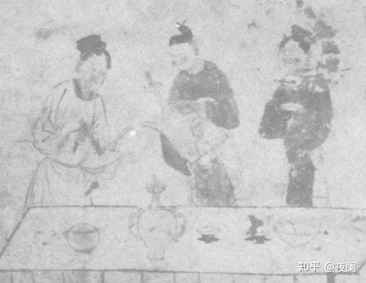

元朝曲折茶可饮，明清俗雅两分难
13世纪初期，蒙古人的饮料以马奶酒和各种家畜的奶为主，随着蒙古疆域的不断扩张，蒙古人逐渐受到金朝饮茶风气的影响。元 朝建立后，蒙古人将自身的族群风俗和饮食习惯带到中原，茶和茶具从宋人的崇金贵银、夸豪斗富进入到了返璞归真、删繁就简 的境界。元代时期常用的茶具仅有执壶、高足杯、盏、盏托、碗、盖罐等，往日习见于宋、辽人茶室中的碾、罗、风炉等均不见踪影。

元代时人们饮茶已逐渐减少了对香料的使用，取而代之的是更具有蒙古特色的酥油、炒米等，这种以酥油入茶的饮用方式也逐 渐传播到汉族和其它民族，现在藏族同胞所喝的酥油茶便源于此。元代时朝廷贡茶虽仍以团饼为主，但饮用散茶和直接用沸水 冲泡散茶的饮茶方式——“泡茶法”开始被贵族和文人阶层所提倡并逐渐流行开来，成为了当时主流的饮茶方式。
元代时期汉族和蒙古族的制茶方式互相融合，在宋代香茶制作的基础上发展形成了品种多样、完整典型的花茶加工工艺，元代 袁桷（jué）诗中写道：“山后天寒不识花，家家高晒芍药芽。南客初来未谙俗，下马入门犹索茶”。描绘出了当时普通百姓家 家制作花茶的画面，体现出花茶加工工艺在民间的广泛普及。
赵孟頫名作《斗茶图》生动展现了元代斗茶的热络场面。四茶贩或注水冲点，或端杯观望，其旁挑担有圆有方，茶炉、汤瓶、 茶壶、茶盏，各类茶具兼有。在几处元代墓葬壁画中，亦有表现备茶点茶之场景：山西省屯留县康庄村2号元墓壁画，绘一侍 女正以茶筅击沸，另一侍女持汤瓶候汤；内蒙古赤峰沙子山2号元墓壁画，绘仆从以汤瓶将水注入盏中，另一侍者手执茶筅， 正于盏中击沸，一梳髻女子在前景桌旁拨动炭火烧水。古人事死如事生之理念下，墓葬中绘制点茶情境，当为墓主人极其珍 视、不可或缺的生活片段，亦是墓主人品味、生活品质，乃至身份地位的象征。茶既是在世者的享受，亦承载着墓主人对身 后生活的热盼。

宋人让茶事成为一项兴旺的事业，但也让茶艺走向了繁复、琐碎、奢侈，失却了茶文化原本的朴实与清谈，过于精细的茶艺 淹没了唐代茶文化的精神。自元代以后，茶文化进入了曲折发展期。直到明代中叶，汉人有感于前代民族兴亡，加之开国之 艰难，在茶文化呈现出简约化和人与自然的契合，以茶显露自己的苦节。
此时茶已出现蒸青、炒青、烘青等品类，茶的饮用已改成“摄泡祛”，明代不少文人雅士留有传世之作，如唐伯虎的《烹 茶画卷》《品茶图》等。茶叶种类增多，泡茶的技艺有别，茶具的款式，质地、花纹千姿百态。晚明到清初，精细的茶文化 再次出现，制茶、烹饮虽未回到宋人的紧琐，但茶风趋向纤弱。
明清之际，茶馆发展极为迅速，有的全镇居民只有数干家，而茶馆可以达到百余家之多。店堂布留古朴雅致，喝茶 的除了文 人雅士之外，还有商人、手工业者等，茶馆中营点心和饮食，还增设说书、演唱节目，等于是民间的娱乐场所。